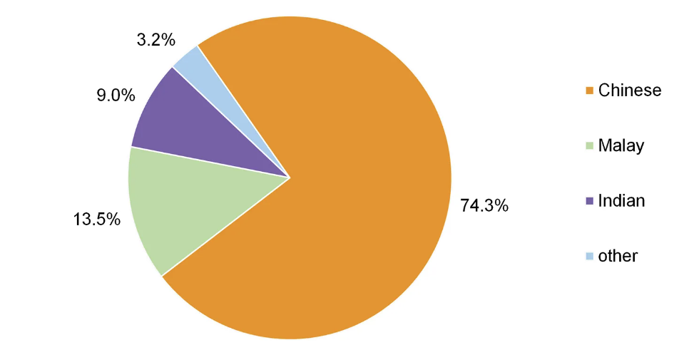
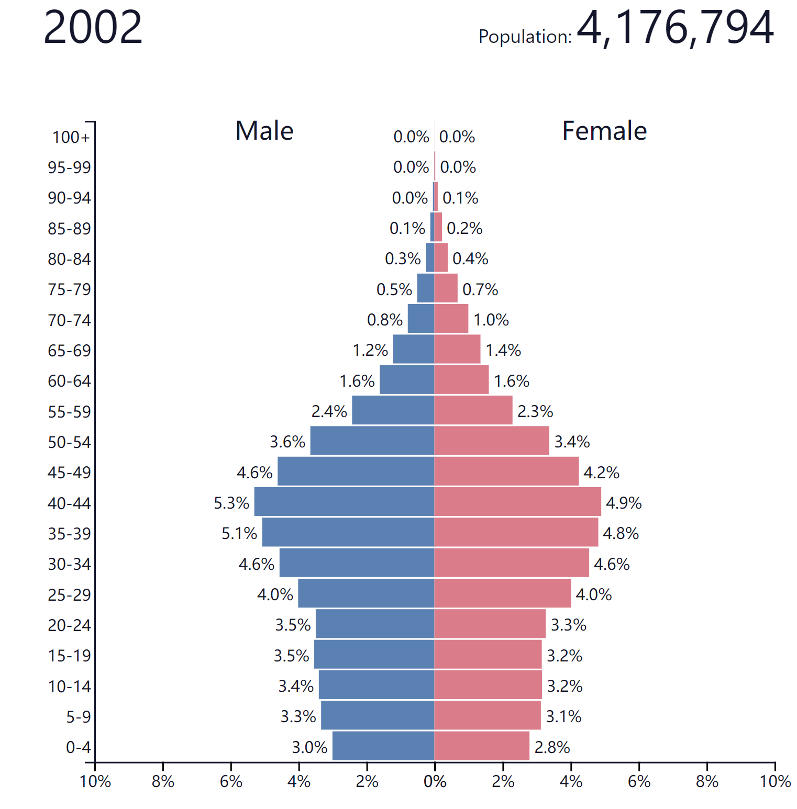
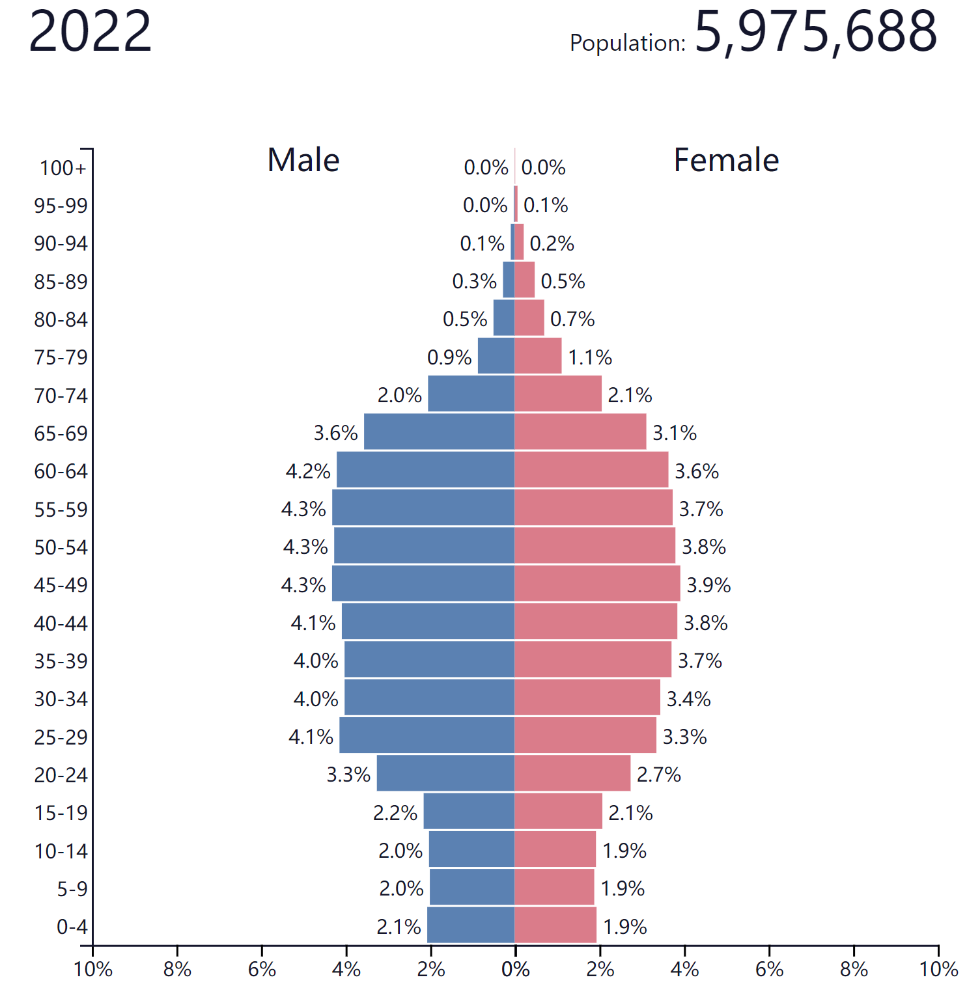

Singapore, like many countries in the world, is facing a demographic shift. With both fertility and mortality rates declining, Singapore's young population is declining year by year, while the number of middle-aged and elderly people is increasing annually. According to the World Bank, the age dependency ratio in Singapore has arrived 35.35 % in 2021. This means that young people are under more pressure to support the elderly. Without intervention, this ratio will continue to increase in the future, which puts a huge financial and psychological burden on young people and hinders socio-economic development.
Therefore, I intend to design a data story to show my audience the current demographic situation of Singapore, the changes it has undergone in recent decades, and its major problems. I hope that my data story will raise more people's awareness on the demographic issues.
Part 1: Characteristics of Singapore's Demographic Structure
-race
Singapore is a multi-ethnic nation. [Using a bar chart to show ethnical population composition, it will be like:
]
-gender [Using a pie chart to show the almost identical ratio of men to women]
-citizen/pr/other
Singapore's residents are composed by 'Citizen', 'Permanent Residents' and 'Other'. Singapore has a high percentage of permanent residents compared to many countries. [Also will use a pie chart]
-age
The average age of Singapore's population is older, or in other words, people live longer and the elderly occupy a larger proportion of the total population
[Will also use a pie chart]
-(highest education level) [bar chart or pie chart]
Part 2: Changes and Challenges
-later marriage [line chart]
-lower marriage rate [line chart]
Singapore's more traditional culture and stricter marriage laws result in very few children being born outside of marriage, so
-lower fertility rate [line chart]
The decrease in fertility rate leads to
-negative population growth [2 line charts (one for population size and one for population growth rate)]
-distorted population structure [interactive population pyramids]


Drag this bar to see how Singapore's population structure changed from 1970 to 2020
(Now this part is not finished yet. In my final version I will link each year's population pyramid to a position on the bar. In this way, when audiences drag the bar, they can feel more directly that the bottom of the pyramid is narrowing while the middle and upper part is widening, which represents the shrinking of the young population and the gradual increase of the old population.)
Part 3: Comparison and Future
Will compare demographic changes, birth rates, and length of parental leave for new fathers and mothers in Singapore and Sweden in recent years.
This part will be like:
- Using bar charts to show the difference in parental leave duration between Sweden and Singapore
- Using two pie charts to compare the childcare workload of fathers and mothers in each of these two countries
Then suggest possible solutions of Singapore's demographic problem (for example, providing social support for new mothers and building a more gender-equal family environment to make sure female Singaporeans are willing to have children).